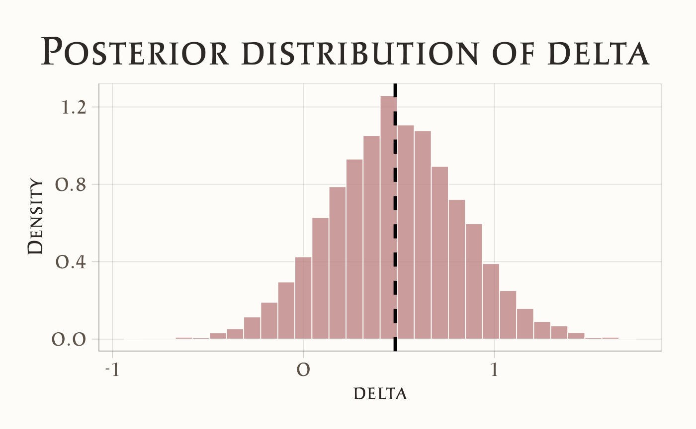

here::here("code", "_common.R") |>
source()
# Load packages
if (!requireNamespace("pacman")) install.packages("pacman")
pacman::p_load(cmdstanr, posterior)48 La crisi della replicazione
48.1 Introduzione
Il presente capitolo introduce la crisi di replicazione che affligge la ricerca psicologica, analizzandone le cause precipue e ponendo in rilievo il ruolo che l’approccio statistico frequentista ha avuto nel concorrere a tale problematica. Il contenuto di questo capitolo costituisce una sintesi rielaborata del testo A student’s guide to open science: Using the replication crisis to reform psychology (Pennington, 2023).
48.2 I Pilastri della Scienza Psicologica Ideale
Affinché la psicologia sia riconosciuta come scienza rigorosa, deve aderire a principi fondamentali:
48.2.1 A. Replicabilità e Riproducibilità
-
Definizione: Un effetto empirico è considerato valido solo se replicabile da ricercatori indipendenti, con metodologie analoghe e campioni adeguati.
- Esempio: Lo studio classico di Asch sul conformismo (1951) è stato replicato in contesti cross-culturali, rafforzandone la validità.
48.2.2 B. Attributi Essenziali della Ricerca
La scienza ideale dovrebbe essere:
| Principio | Descrizione | Implicazioni per la Psicologia |
|---|---|---|
| Credibile | Sottoposizione delle ipotesi a verifica rigorosa e peer review trasparente. | Evitare p-hacking e HARKing (Hypothesizing After Results are Known). |
| Affidabile | Risultati accurati e privi di distorsioni (bias). | Utilizzo di preregistrazione e open data. |
| Trasparente | Descrizione dettagliata di metodi, analisi e risultati. | Adozione di registered reports e condivisione di materiali supplementari. |
| Accessibile | Democratizzazione della conoscenza (es. open access). | Piattaforme come PsyArXiv per preprint o OSF per la condivisione di protocolli. |
| Inclusiva | Partecipazione equa di gruppi sottorappresentati (etnici, di genere, ecc.). | Studi con campioni diversificati (es. non solo WEIRD: Western, Educated, Industrialized, Rich, Democratic). |
| Collaborativa | Superamento della competizione accademica a favore di reti di ricerca. | Progetti multi-lab (es. Many Labs in psicologia sociale). |
| Autocorrettiva | Revisione continua degli errori e ritrattazione di risultati non validi. | Database come Retraction Watch e correzioni pubbliche negli articoli. |
48.3 La Disconnessione tra Ideale e Realtà
Pennington (2023) utilizza un esercizio retorico per criticare la prassi scientifica tradizionale:
Visualizzate lo stereotipo dello scienziato: un uomo bianco, in un laboratorio con cartelli ‘DIVIETO DI ACCESSO’, che tratta i dati come proprietà privata. Questa immagine riflette una scienza chiusa, competitiva e non allineata ai valori di trasparenza e collaborazione.
48.3.1 Problemi Emersi
-
Segretezza: Ricercatori che occultano dati per paura di critiche o “furti” di idee.
-
Crisi di replicazione: Il 50-70% degli studi psicologici non è replicabile (Collaboration, 2015).
- Pressioni accademiche: Focus su pubblicazioni “rivoluzionarie” a scapito di solidità metodologica.
48.3.2 Verso una Psicologia più Rigorosa
Per affrontare le criticità emerse nella ricerca psicologica, sono state avanzate diverse proposte concrete. Una delle direzioni più promettenti è l’adozione diffusa delle pratiche di Open Science, che includono la preregistrazione degli studi (per evitare il p-hacking), la condivisione aperta dei dati (open data) e l’utilizzo di strumenti gratuiti e trasparenti, come il software JASP per le analisi statistiche. Questi approcci non solo aumentano l’affidabilità dei risultati, ma favoriscono anche una cultura di collaborazione anziché di segretezza.
Un altro passo fondamentale riguarda la formazione dei ricercatori. Introdurre corsi obbligatori su etica della ricerca e metodi quantitativi avanzati potrebbe ridurre errori metodologici e comportamenti opportunistici, preparando una nuova generazione di psicologi a standard più rigorosi.
Infine, è essenziale ripensare il sistema di valutazione accademica. Invece di premiare la mera quantità di pubblicazioni – che spesso spinge verso risultati “sensazionali” ma poco replicabili – sarebbe più produttivo incentivare la qualità, la trasparenza e l’impatto a lungo termine del lavoro scientifico.
Un esempio concreto di questo cambiamento è il progetto ManyBabies, un’iniziativa internazionale che coinvolge decine di laboratori nello studio dello sviluppo infantile. Grazie alla collaborazione su larga scala e alla condivisione di protocolli standardizzati, ManyBabies ha dimostrato come sia possibile produrre risultati più solidi e generalizzabili, superando i limiti dei piccoli studi isolati. Questo caso illustra perfettamente i benefici di una psicologia più aperta, cooperativa e metodologicamente rigorosa.
48.4 La Crisi della Replicazione in Psicologia
Negli ultimi decenni, la psicologia si è trovata al centro di una crisi che ha messo in discussione molte delle sue basi epistemologiche e metodologiche: la crisi della replicazione. Questo fenomeno indica l’incapacità di replicare con successo un’ampia parte degli studi pubblicati, con implicazioni rilevanti per la cultura accademica e il modo di concepire la ricerca scientifica (Parsons et al., 2022).
Per fallimento della replicazione si intende il caso in cui uno studio, ripetuto da altri ricercatori seguendo le stesse procedure e utilizzando campioni simili, non riesce a ottenere risultati comparabili a quelli originali. Questo ha portato alla luce problemi sistemici legati alla metodologia di ricerca, all’interpretazione dei dati e alle dinamiche del sistema accademico. La crisi della replicazione ha dunque evidenziato la necessità di un cambiamento strutturale nella pratica scientifica, sottolineando l’urgenza di un approccio più trasparente, rigoroso e collaborativo.
Nelle sezioni seguenti vengono presentati gli eventi chiave di quella che possiamo chiamare la storia della crisi della replicazione.
48.4.1 2005: “Perché la maggior parte dei risultati pubblicati è falsa” (Ioannidis)
Un primo momento cruciale è stato l’articolo di “Why Most Published Research Findings Are False” (Ioannidis, 2005) che ha evidenziato come molti risultati scientifici fossero in realtà falsi positivi. Ioannidis attribuì questo fenomeno a campioni di piccole dimensioni, un’eccessiva enfasi sui valori-p per indicare significatività, flessibilità nei metodi di analisi e la competizione per produrre risultati “innovativi”. Questo articolo ha messo in luce problemi che trascendono la psicologia, ma che in seguito sarebbero emersi come centrali anche per questa disciplina.
48.4.2 2011: Lo Studio di Daryl Bem, “Feeling the Future”
Uno degli eventi più controversi è stato lo studio di Daryl Bem “Feeling the Future” (Bem, 2011), che suggeriva l’esistenza della precognizione, ovvero la capacità di “sentire” eventi futuri. Attraverso nove esperimenti, Bem pubblicò risultati statisticamente significativi che sembravano sfidare le leggi della causalità.
Lo studio di Bem si inseriva nella tradizione degli esperimenti di “priming”, una tecnica ampiamente utilizzata in psicologia sociale dagli anni ’70. Gli esperimenti di priming tipicamente coinvolgevano studenti universitari, remunerati con modeste somme o crediti accademici. I partecipanti venivano esposti a determinati concetti per poi osservare come questi influenzassero il loro comportamento successivo. Un celebre esempio è lo studio di John Bargh del 1996, che dimostrò come l’esposizione a parole associate all’età avanzata inducesse i soggetti a camminare più lentamente (Bargh et al., 1996). Un altro studio del 2006 rivelò che il priming con concetti legati al denaro rendeva le persone meno propense ad aiutare gli altri. Questi studi sembravano dimostrare una straordinaria malleabilità della mente umana, suggerendo che il nostro comportamento potesse essere inconsciamente manipolato da sottili segnali ambientali (Leys, 2024). Tuttavia, lo studio di Bem introdusse un elemento nuovo in questo paradigma sperimentale.
Tra i vari esperimenti condotti da Bem, uno in particolare si distingueva. I soggetti venivano esposti a una parola con connotazione positiva o negativa e successivamente dovevano valutare rapidamente la piacevolezza di alcune immagini. Fin qui, nulla di insolito. La svolta radicale consisteva nel fatto che in metà delle prove, il priming avveniva dopo che i soggetti avevano già visto e valutato l’immagine (Bem, 2011).
Sorprendentemente, i risultati mostravano che il priming funzionava anche in queste condizioni: i partecipanti erano più veloci a giudicare piacevoli le immagini quando successivamente venivano esposti a una parola positiva. Questo effetto risultava statisticamente significativo, con un p-value di 0.01, sufficiente secondo gli standard correnti per rifiutare l’ipotesi nulla.
Bem interpretò questi risultati come prova della chiaroveggenza, una conclusione che suscitò notevoli controversie e ridicolizzò la psicologia. Gli altri otto esperimenti dello studio, tutti basati su classici paradigmi della psicologia sociale con l’ordine temporale invertito, mostrarono risultati altrettanto statisticamente significativi.
Questi risultati ponevano la comunità scientifica di fronte a un dilemma: accettare l’esistenza di fenomeni paranormali o mettere in discussione le pratiche statistiche e metodologiche consolidate nella disciplina. Bem stesso continua a sostenere la validità dei suoi risultati come prova dell’esistenza di capacità precognitive.
Sebbene pubblicato su una rivista prestigiosa, lo studio sollevò enormi dubbi metodologici. Le repliche successive non riuscirono a confermare i risultati di Bem, mostrando come pratiche discutibili, quali il p-hacking (modifiche al metodo di analisi per ottenere risultati significativi), potessero produrre falsi positivi apparentemente robusti.
48.4.3 2011: Il Caso di Frode di Diederik Stapel
Nello stesso anno, Diederik Stapel, una figura di spicco della psicologia sociale, fu accusato di aver falsificato dati in decine di studi pubblicati. Tra i suoi esperimenti più famosi vi era quello secondo cui ambienti disordinati aumenterebbero il razzismo. Un altro studio suggeriva che mangiare carne rendeva le persone più antisociali. Tuttavia, si scoprì che per quegli studi, e molti altri, non aveva mai condotto gli esperimenti né raccolto i dati. Li aveva semplicemente inventati. A volte le frodi accadono. Stapel fu scoperto (alla fine), licenziato e decine dei suoi articoli furono ritirati. Questo scandalo scosse profondamente la comunità accademica e divenne un simbolo della crisi.
48.4.4 2011: La Meta-ricerca e le Pratiche di Ricerca Discutibili (QRPs)
La meta-ricerca è un campo di studio che si concentra sul modo in cui viene condotta la ricerca scientifica. Comprende temi come i metodi, la trasparenza nella comunicazione, la riproducibilità, la valutazione e i sistemi di incentivi che regolano la scienza (Ioannidis et al., 2015). Questo ambito è emerso con urgenza dopo una serie di casi controversi e di frodi conclamate, come gli studi di Daryl Bem e Diederik Stapel, che hanno evidenziato falle nei processi di ricerca. I ricercatori hanno così iniziato ad analizzare pratiche note come Questionable Research Practices (QRPs, Pratiche di Ricerca Discutibili), che sfruttano aree grigie nelle norme scientifiche per raccogliere e analizzare i dati.
Simmons et al. (2011) hanno dimostrato come la flessibilità nella raccolta, analisi e comunicazione dei dati permetta ai ricercatori di far apparire “significativo” praticamente qualsiasi risultato. Tra le pratiche discusse, spiccano:
-
Optional stopping: Interrompere la raccolta dei dati non appena si raggiunge la significatività statistica, invece di seguire un piano prestabilito.
-
P-hacking: Condurre molteplici test non pianificati, selezionando variabili o analisi solo quando producono un valore p inferiore a 0.05.
- HARKing (Hypothesizing After Results are Known): Modificare le ipotesi a posteriori per adattarle ai risultati ottenuti, presentandole come ipotesi iniziali.
Queste pratiche non solo compromettono l’integrità scientifica, ma rendono estremamente facile produrre falsi positivi. Per dimostrarlo, Simmons e colleghi hanno condotto simulazioni al computer e due esperimenti, rivelando quanto fosse “troppo facile” raccogliere prove a sostegno di ipotesi false.
La portata di queste pratiche è sorprendente. Simmons et al. hanno scoperto che:
- Usare una sola QRP può quasi raddoppiare il tasso di falsi positivi, portandolo dal 5% al 10%.
- Combinare più QRPs può far salire questa percentuale oltre il 60%.
Per sottolineare il problema, i ricercatori hanno dimostrato, in modo volutamente ironico, che ascoltare la canzone dei Beatles “When I’m Sixty-Four” potrebbe far apparire le persone più giovani di quanto fossero prima di ascoltarla. Questa dimostrazione satirica evidenziava che inseguire la significatività statistica senza un rigore metodologico può produrre risultati assurdi.
John et al. (2012) hanno condotto un’indagine su larga scala, intervistando 2000 ricercatori per comprendere la diffusione delle QRPs. Con un approccio innovativo, hanno chiesto ai partecipanti non solo di riferire le proprie pratiche, ma anche quelle dei colleghi. I risultati sono stati sconvolgenti:
- Oltre il 60% degli intervistati ha ammesso di non aver riportato tutte le variabili dipendenti misurate.
- Più del 50% ha interrotto la raccolta dati non appena ottenuti risultati significativi (optional stopping).
- Più del 40% ha selezionato e riportato solo esperimenti “riusciti”.
Sorprendentemente, i ricercatori tendevano a dichiarare che i colleghi adottavano queste pratiche più frequentemente di loro stessi. Molti giustificavano queste pratiche come “norme accademiche” del tempo.
La meta-ricerca ha giocato un ruolo cruciale nell’aprire gli occhi della comunità scientifica sui pericoli di queste decisioni apparentemente “banali”. In un contesto in cui le QRPs erano ampiamente accettate, la meta-ricerca ha evidenziato come queste pratiche possano seriamente danneggiare il progresso scientifico. Grazie al movimento dell’Open Science, si stanno introducendo norme che migliorano la credibilità della ricerca, spostando l’enfasi dalla produzione di risultati “significativi” alla conduzione di studi rigorosi e trasparenti.
48.4.5 2012: La Crisi di Fiducia della Psicologia
Siamo nel 2012, un anno segnato da una serie di eventi che spingono Harold Pashler ed Eric-Jan Wagenmakers a dichiarare che la psicologia sta affrontando una “crisi di fiducia”. In un numero speciale della rivista Perspectives on Psychological Science (PoPs), i due autori raccolgono una molteplicità di prospettive sulla nascente crisi della replicazione, cercando di individuarne le cause e le implicazioni.
Le reazioni alla crisi sono variegate e, in alcuni casi, contrastanti. Alcuni studiosi sostengono che le affermazioni di una crisi siano premature (Stroebe e Strack, 2014) e che i problemi di replicazione non siano un fenomeno nuovo (Spellman, 2015). Altri, invece, sottolineano come incentivare e valorizzare gli studi di replicazione rappresenti un metodo efficace e diretto per migliorare la qualità della scienza psicologica (Koole e Lakens, 2012).
Il numero speciale evidenzia anche iniziative in corso per affrontare il problema. Tra queste, l’Open Science Collaboration (OSC), un progetto di larga scala avviato nel 2012, si propone di verificare empiricamente se la psicologia sia effettivamente alle prese con una crisi della replicazione. L’obiettivo del progetto è ambizioso: replicare numerosi studi pubblicati per valutare la robustezza dei risultati originari. Sebbene i risultati di questa iniziativa non fossero ancora disponibili al momento della pubblicazione del numero speciale, il progetto rappresentava già una pietra miliare per la disciplina.
Nonostante le preoccupazioni, il numero speciale si chiude con una nota positiva, destinata a risuonare nella comunità scientifica. I casi di frode, le pratiche di ricerca discutibili (QRPs) e i fallimenti nei tentativi di replicazione, sebbene dannosi, hanno aperto la strada a una riflessione critica. Questo processo ha permesso alla psicologia di affrontare i propri limiti, correggere errori, superare i bias e costruire una letteratura più affidabile e trasparente.
Questo periodo storico segna un punto di svolta: la crisi di fiducia ha messo in discussione le fondamenta della disciplina, ma ha anche creato l’opportunità per un rinnovamento scientifico, stimolando pratiche più rigorose e una maggiore attenzione alla replicabilità e alla trasparenza.
48.4.6 2014: Il Progetto “Many Labs”
Nel 2014 fu pubblicato il primo tentativo su larga scala di replicare risultati psicologici: il progetto “Many Labs”. Questo imponente sforzo collaborativo, guidato da Klein et al. (2014), testò la replicabilità di 13 risultati classici della psicologia, coinvolgendo 6344 partecipanti in 12 paesi. Gli studi selezionati rispettavano tre criteri principali: erano relativamente brevi, avevano un design semplice e potevano essere facilmente condotti online.
Tra i fenomeni esaminati figurava la fallacia del costo irrecuperabile (sunk cost fallacy), secondo cui le persone tendono a proseguire un’attività quando vi hanno già investito tempo, sforzi o denaro. Un esempio classico: se hai acquistato un biglietto per vedere la tua squadra di calcio preferita e, il giorno della partita, inizia a piovere a dirotto, sarai più propenso a partecipare perché hai già speso i soldi per il biglietto (Oppenheimer e Monin, 2009).
Altri studi replicati includevano:
- L’influenza del framing dei guadagni e delle perdite sul rischio (Tversky e Kahneman, 1981).
- Le differenze di genere negli atteggiamenti impliciti verso la matematica e le arti (Nosek et al., 2002).
I risultati sembravano promettenti: il 77% degli studi replicò con successo i risultati originali (10 su 13). Tuttavia, non tutti gli studi fornirono lo stesso livello di evidenza. Ad esempio:
- Uno studio sull’efficacia del contatto sociale immaginato nel ridurre i pregiudizi (Husnu e Crisp, 2010) mostrò supporto limitato, con solo 4 campioni su 36 che evidenziarono un effetto significativo.
- Due studi di priming non furono replicati. Nel primo, i ricercatori non trovarono che l’esposizione alla bandiera americana aumentasse il conservatorismo (Carter et al., 2011). Nel secondo, il priming con concetti legati al denaro non portò a un incremento delle credenze o dei comportamenti capitalistici (Caruso et al., 2013).
Sebbene i risultati fossero accolti come una vittoria per la replicabilità, alcuni ricercatori sottolinearono limiti nel progetto Many Labs 1. Gli stessi autori riconobbero che molti degli studi selezionati erano già noti per essere altamente replicabili. Secondo alcuni critici, il principale contributo di questo progetto era dimostrare che almeno dieci effetti psicologici erano replicabili, ma non forniva una panoramica più ampia sulla replicabilità complessiva nella psicologia (Yarkoni, 2013).
Questo progetto rappresentò comunque un passo fondamentale per affrontare la crisi della replicazione, sottolineando l’importanza della collaborazione scientifica e del rigore metodologico.
48.4.7 2015: Il Progetto di Riproducibilità della Open Science Collaboration
Nel 2015, la Open Science Collaboration (OSC) pubblicò i risultati del Reproducibility Project: Psychology, dimostrando che la buona scienza richiede tempo e rigore. Superando i limiti del progetto Many Labs 1, un team composto da oltre 270 ricercatori internazionali si impegnò a replicare 100 studi scelti casualmente da riviste di punta nel campo della psicologia.
Per garantire risultati solidi e inattaccabili, il team adottò una metodologia rigorosa:
- Consultazione con gli autori originali: gli autori degli studi originali furono coinvolti per confermare il design sperimentale e ridurre al minimo eventuali discrepanze.
- Aumento delle dimensioni campionarie: i campioni furono ampliati per garantire una potenza statistica sufficiente.
- Registrazione preventiva dei metodi: i piani di analisi e raccolta dati furono registrati in anticipo per prevenire bias da parte dei ricercatori.
Gli studi selezionati per la replicazione includevano domande di ricerca come:
- La convinzione che il comportamento umano sia predeterminato incoraggia il tradimento?
- I bambini seguono automaticamente lo sguardo per trovare oggetti nascosti?
- È possibile osservare un “effetto after-motion” da fotografie fisse che rappresentano movimento?
I risultati del progetto fecero scalpore e conquistarono i titoli dei giornali a livello globale. Solo il 36% degli studi replicò con successo, ottenendo un valore-p inferiore a 0.05. La psicologia sociale si rivelò particolarmente problematica, con un tasso di replicazione del 25%, rispetto al 50% degli studi di psicologia cognitiva.
Per contestualizzare questi numeri, se gli effetti originali fossero stati realmente validi, il tasso minimo di replicazione atteso sarebbe stato dell’89% (Field et al., 2019). Anche tra gli studi replicati, le dimensioni degli effetti risultarono dimezzate rispetto a quelle riportate negli studi originali.
Questi risultati provocarono una forte reazione nella comunità scientifica. Ci si chiedeva: era la fine della psicologia? La disciplina avrebbe mai recuperato credibilità? Sebbene i dati fossero allarmanti, aprirono un dibattito più ampio. Come sottolineato da Kuhn (1962) e Redish et al. (2018), fallimenti nella replicazione possono segnare l’inizio di una rivoluzione scientifica, stimolando un ripensamento dei metodi, delle ipotesi e delle pratiche di ricerca.
Il Reproducibility Project: Psychology non solo mise in luce le fragilità della disciplina, ma divenne un punto di partenza per migliorare la trasparenza, la collaborazione e la robustezza nella ricerca psicologica.
48.4.7.1 Studi Successivi
Questi risultati sono stati ulteriormente corroborati da numerosi studi successivi, tra cui una ricerca più recente basata su tecniche di machine learning, che ha esaminato studi di psicologia pubblicati in sei importanti riviste nell’arco di vent’anni. Questa ricerca suggerisce che poco più della metà di questi articoli di psicologia non supererebbe i test di replicazione (Youyou et al., 2023). Discipline come la psicologia sociale sono state oggetto di particolare preoccupazione, con un tasso di replicazione del solo 25% riportato dal Progetto di Riproducibilità (Collaboration, 2015). Questo dato è in linea con il lavoro di Youyou et al. (2023), che ha mostrato come la replicabilità degli articoli di psicologia vari considerevolmente per sottocampo, con la psicologia sociale che mostra un tasso di replicazione stimato del 37%, un risultato leggermente più incoraggiante rispetto a quanto riportato in precedenza, ma ancora tra i più bassi dei sottocampi esaminati. Altri settori come la psicologia dello sviluppo, cognitiva e clinica hanno mostrato tassi di replicazione stimati rispettivamente del 36%, 42% e 44%, mentre aree come la psicologia delle organizzazioni e della personalità hanno mostrato tassi leggermente più incoraggianti (50% e 55%, rispettivamente). Complessivamente, le evidenze suggeriscono che le preoccupazioni diffuse sulla robustezza e replicabilità dei risultati della ricerca psicologica siano fondate. Sebbene il problema non sia limitato esclusivamente alla psicologia, le questioni rilevate in questo campo hanno ricevuto notevole attenzione a causa dell’apparente portata del fenomeno.
Questi risultati confermavano in modo drammatico le previsioni formulate anni prima da John Ioannidis e Dennis Lindley. Le loro avvertenze riguardo alla possibilità che una larga parte, se non la maggioranza, dei risultati scientifici pubblicati potesse essere falsa, si rivelavano ora profetiche.
Il Progetto di Riproducibilità di Nosek ha segnato un punto di svolta nel dibattito sulla crisi della replicazione in psicologia e, più in generale, nelle scienze sociali e biomediche. Ha evidenziato non solo la fragilità di molti risultati ritenuti consolidati, ma anche la necessità di un riesame critico delle pratiche di ricerca e pubblicazione scientifica. Questo ripensamento delle metodologie scientifiche è ancora in atto.
48.4.8 2015: 1500 Scienziati Sollevano il Velo sulla Riproducibilità
I risultati del progetto Collaboration (2015) colpirono il mondo della psicologia come un fulmine a ciel sereno. Molti risultati psicologici, considerati affidabili, crollarono improvvisamente, generando un’ondata di discussioni nei dipartimenti universitari: quale sarebbe stato il prossimo “effetto” a fallire? Tuttavia, nonostante la psicologia fosse diventata l’emblema delle repliche fallite, presto si comprese che non era un problema esclusivo della disciplina.
Nel 2016, Baker condusse un’indagine su 1500 scienziati provenienti da diverse discipline, tra cui chimica, medicina, fisica e ingegneria, per esplorare le preoccupazioni riguardo alla replicazione e alla riproducibilità (Baker, 2016). I risultati furono sorprendenti: circa il 90% dei partecipanti concordò sull’esistenza di una crisi di riproducibilità, definita come significativa dal 52% e lieve dal 38%.
Un dato particolarmente allarmante emerse dall’indagine:
- In media, il 40% degli scienziati aveva riscontrato difficoltà nel riprodurre i propri esperimenti.
- Questa percentuale saliva a oltre il 60% quando si tentava di riprodurre gli esperimenti di altri ricercatori.
Tra le discipline, la chimica risultò la più problematica, con oltre l’85% dei ricercatori che riportavano fallimenti nel riprodurre i risultati altrui.
L’articolo di Baker riportava anche esperienze personali che riflettevano il senso di smarrimento generato da questa crisi. Il professor Marcus Munafò, per esempio, descrisse così il suo percorso:
Ho cercato di replicare ciò che dalla letteratura sembrava semplice, ma non ci sono riuscito. Ho avuto una crisi di fiducia, e poi ho scoperto che questa esperienza non era affatto rara. (Baker, 2016)
L’indagine di Baker non si limitò a evidenziare il problema, ma esplorò anche le possibili cause della crisi, come pratiche metodologiche inadeguate e pressioni accademiche, offrendo al contempo suggerimenti per interventi correttivi.
L’indagine segnò un momento cruciale: la crisi della riproducibilità, inizialmente confinata a discussioni accademiche, raggiunse una visibilità globale. Non era più solo un problema della psicologia, ma un fenomeno che colpiva l’intero mondo scientifico, portando con sé la necessità di una trasformazione radicale delle pratiche di ricerca.
Questo evento contribuì a consolidare il riconoscimento della crisi della riproducibilità come una sfida centrale per tutta la scienza, spingendo verso un cambiamento culturale che mettesse al centro trasparenza, rigore e collaborazione.
48.5 La Cultura della Frode nel Sistema Accademico
In alcuni casi, la crisi della replicazione si intreccia con episodi di frode scientifica, rivelando un lato oscuro della ricerca accademica. Uno degli aspetti più preoccupanti è che il sistema accademico, con i suoi meccanismi di incentivo basati su pubblicazioni frequenti e finanziamenti competitivi, può indirettamente favorire comportamenti disonesti. Questo sistema, orientato al publish or perish (pubblica o scompari), crea pressioni che talvolta spingono i ricercatori a compromettere l’integrità scientifica per raggiungere i propri obiettivi di carriera.
48.5.1 Il Caso Brian Wansink
Un caso emblematico è quello di Brian Wansink, ex ricercatore di spicco alla Cornell University, che ricevette cospicui finanziamenti federali durante l’amministrazione Obama. I suoi studi sul comportamento alimentare, come quello sugli uomini che mangiano di più in presenza di donne o sull’effetto dei nomi “attraenti” dati alle verdure sul consumo da parte dei bambini, attirarono grande attenzione mediatica ma si rivelarono in seguito non replicabili. Le conseguenze per Wansink furono severe: diciotto suoi articoli furono ritirati, sette ricevettero “espressioni di preoccupazione”, e quindici furono corretti. Nel 2019, Wansink si dimise dalla Cornell University dopo essere stato giudicato colpevole di cattiva condotta scientifica.
48.5.2 Il Caso Sylvain Lesné
Un altro esempio rilevante riguarda Sylvain Lesné e i suoi coautori che, nel 2006, pubblicarono su Nature un importante articolo sul morbo di Alzheimer. Questo lavoro era fondamentale per lo sviluppo dell’ipotesi amiloide, un meccanismo proposto per spiegare come la malattia affligge le sue vittime. La ricerca sulla malattia di Alzheimer, che colpisce oltre 50 milioni di persone nel mondo, ha ricevuto oltre un miliardo di dollari in finanziamenti governativi fino al 2022, incoraggiata da studi come quello di Lesné.
Nel 2022, il neuroscienziato Matthew Schrag scoprì immagini manipolate in questo e in molti altri articoli di Lesné, inclusi quelli che sostenevano l’ipotesi amiloide. Le immagini erano state manualmente modificate e accorpate per mostrare falsamente supporto alle ipotesi degli articoli. Queste frodi passarono inosservate attraverso i processi di peer review formali di Nature e di altre sei riviste accademiche, venendo infine scoperte solo tramite canali non ufficiali.
Le conseguenze di queste scoperte furono lente e frammentarie. Gli altri coautori dell’articolo del 2006 alla fine accettarono di ritirarlo, ma non Lesné stesso. La lentezza della risposta a queste evidenze di frode, e il fatto che Lesné continui a essere finanziato dal National Institutes of Health e impiegato presso l’Università del Minnesota, dimostra un fallimento sistemico nell’affrontare la cattiva condotta scientifica.
48.5.3 Altri Casi di Rilievo
Nel mondo accademico, diversi altri recenti scandali hanno messo in luce il problema della frode scientifica e le sue conseguenze spesso limitate per i responsabili. Ecco alcuni casi emblematici:
Marc Tessier-Lavigne, ex presidente della Stanford University: Nel 2023, fu costretto a dimettersi dopo la rivelazione di dati falsificati in sue ricerche precedenti presso Genentech. Nonostante lo scandalo, Tessier-Lavigne ha subito conseguenze minime, diventando successivamente CEO di una nuova azienda di ricerca farmacologica. Lo scandalo fu portato alla luce grazie all’indagine condotta da Theo Baker, uno studente diciassettenne di Stanford.
-
Dan Ariely e Francesca Gino: Questi due rinomati psicologi, noti per le loro ricerche sulla disonestà e il comportamento non etico, sono stati coinvolti in uno scandalo di frode scientifica.
- Dan Ariely, nel 2021, fu implicato nella fabbricazione di dati in un articolo del 2012 sulla disonestà.
- Francesca Gino, docente presso la Harvard Business School, è stata accusata di aver presentato lavori contenenti risultati falsificati. Il sito del Dipartimento ora riporta che è in “administrative leave”.
L’inefficacia delle istituzioni accademiche nel gestire la frode scientifica sembra riflettere un problema culturale di carattere sistemico. Gli incentivi attuali favoriscono la pubblicazione di risultati positivi e innovativi, spesso a scapito dell’integrità scientifica. Gli studiosi che resistono a queste pressioni rischiano di essere emarginati, mentre chi adotta pratiche discutibili per ottenere risultati desiderati viene premiato con finanziamenti, promozioni e prestigio accademico.
48.6 Cosa Significa “Fallimento della Replicazione”?
Il fallimento della replicazione non coincide necessariamente con l’idea che il fenomeno studiato sia inesistente. Al contrario, le cause di un esito negativo in un tentativo di replicazione possono essere molteplici e spesso difficili da individuare con precisione. Comprendere queste ragioni è fondamentale per identificare le criticità metodologiche, migliorare il rigore scientifico e favorire il progresso della conoscenza. Al di là dei casi evidenti di frode, i fallimenti della replicazione rappresentano un’opportunità per riflettere sulla qualità delle pratiche di ricerca.
48.6.1 Possibili Cause di Fallimento nella Replicazione
Falsi positivi nello studio originale
Un fallimento può indicare che lo studio originale abbia rilevato un effetto inesistente per puro caso. Questo rischio è particolarmente elevato in studi con campioni di piccole dimensioni e bassa potenza statistica, dove gli effetti riportati risultano spesso sovrastimati o instabili.-
Falsi negativi nella replica
Il fallimento può derivare da un falso negativo, ovvero la mancata rilevazione di un effetto realmente esistente. Le cause principali includono:- Differenze metodologiche o di popolazione tra studio originale e replica.
- Confondenti metodologici o una potenza statistica insufficiente.
- Presenza di variabili moderatrici che influenzano l’intensità dell’effetto in determinati contesti.
- Differenze metodologiche o di popolazione tra studio originale e replica.
48.6.2 La Scienza tra Incertezza e Riproducibilità
La scienza raramente offre certezze assolute. Come evidenziato dall’Open Science Collaboration, un singolo studio, sia esso originale o di replica, non è sufficiente a fornire una risposta definitiva. Solo replicazioni multiple e sistematiche possono distinguere effetti reali da errori casuali, offrendo una visione più affidabile di un fenomeno. Questo approccio richiede tempo e risorse, ma rappresenta il cuore del metodo scientifico.
48.6.3 Psicologia e Altri Campi
Sebbene la crisi della replicazione sia stata ampiamente discussa in psicologia, problemi simili affliggono molte altre discipline scientifiche. Studi di replicazione hanno evidenziato risultati preoccupanti: in oncologia, meno della metà degli studi replicati ha prodotto risultati coerenti, con tassi di riproducibilità estremamente bassi in alcuni casi; nelle neuroscienze, i tentativi di replicare correlazioni cervello-comportamento hanno mostrato un altissimo tasso di insuccesso. Anche in discipline come l’economia e la filosofia sperimentale, pur registrando tassi di replicazione relativamente più elevati, permangono dubbi sulla selezione degli studi replicati e sulla rappresentatività dei risultati (Pennington, 2023).
Questi dati dimostrano che la problematica della replicazione non è esclusiva della psicologia, ma comune a diverse aree del sapere. Tuttavia, sollevano anche un interrogativo critico: è corretto parlare di “crisi” o si tratta piuttosto di una fase di trasformazione necessaria per migliorare il rigore e la trasparenza nella ricerca scientifica?
48.7 Dibattito sulla Natura della Crisi
Il tema della crisi della replicazione ha suscitato un dibattito acceso e opinioni contrastanti all’interno della comunità scientifica:
Approccio alle repliche: Alcuni ricercatori ritengono che le repliche esatte siano poco significative, preferendo le repliche concettuali che possano approfondire la comprensione di un fenomeno. Altri, invece, sostengono che solo repliche rigorose ed esatte siano in grado di verificare la robustezza di un effetto, garantendo maggiore affidabilità.
Interpretazione dei dati dell’Open Science Collaboration (OSC): Il tasso di successo delle repliche riportato dall’OSC, pari al 36%, ha alimentato ulteriori discussioni. Alcuni attribuiscono questo risultato a differenze metodologiche tra studi originali e tentativi di replica, come campioni diversi o contesti modificati. Tuttavia, ricerche successive hanno smentito queste ipotesi, indicando che tali variazioni non spiegano interamente i bassi tassi di replicazione.
Invece di considerare i fallimenti di replicazione come una crisi, molti studiosi li interpretano come un’opportunità per rafforzare la scienza. La replicazione, infatti, rappresenta un elemento fondamentale del metodo scientifico: permette di identificare i limiti di un fenomeno e di migliorare la comprensione delle condizioni in cui si manifesta. Ogni fallimento diventa, così, uno stimolo per il progresso.
Questa visione ha dato origine a un movimento noto come “rivoluzione della credibilità”, che punta a migliorare la qualità della ricerca attraverso trasparenza, autocorrezione e valorizzazione delle repliche. Progetti come il Loss of Confidence dimostrano che riconoscere i limiti e le incertezze degli studi precedenti non rappresenta una debolezza, ma un segno di integrità scientifica.
Il passaggio dalla percezione di crisi a una rivoluzione della credibilità rappresenta un profondo cambiamento culturale nella comunità accademica. La scienza non è un processo statico, ma un percorso dinamico che evolve grazie al confronto critico e alla riflessione. In questa prospettiva, ogni fallimento nella replicazione non è un punto d’arrivo, ma un trampolino di lancio verso una conoscenza più affidabile e trasparente.
48.8 Cause della Crisi
48.8.1 Incentivi Accademici e la Dominanza della Quantità sulla Qualità
Per comprendere a fondo le problematiche che affliggono il mondo della ricerca, è essenziale considerare il contesto lavorativo in cui operano i ricercatori. Sebbene spesso vengano idealizzati come figure obiettive e razionali, è fondamentale ricordare che sono anche esseri umani, soggetti a pressioni professionali, responsabilità economiche e ambizioni di carriera. Il loro lavoro è costantemente sottoposto a valutazione: oltre a gestire attività didattiche e amministrative, devono pubblicare articoli su riviste di prestigio e assicurarsi finanziamenti per sostenere i loro gruppi di ricerca. Questo sistema premia la quantità a discapito della qualità, favorendo una mentalità di “pubblica o perisci”.
La pressione a pubblicare incessantemente è una delle principali cause dei problemi che alimentano la crisi di replicazione nella scienza. La cultura del “publish or perish” spinge i ricercatori a produrre rapidamente risultati rilevanti, spesso a scapito della rigorosità metodologica e della riproducibilità (Gopalakrishna et al., 2022; Grimes et al., 2018).
Questa situazione genera un paradosso: ciò che favorisce la carriera individuale di uno scienziato non sempre coincide con gli interessi del progresso scientifico. Le motivazioni intrinseche di contribuire alla conoscenza vengono spesso offuscate da motivazioni estrinseche legate a indicatori di produttività accademica. Non sorprende, quindi, che oltre il 60% dei ricercatori individui questa pressione come una delle principali cause dei problemi legati alla replicazione e alla riproducibilità.
48.8.2 Bias Cognitivi e Distorsioni nella Ricerca
I bias cognitivi rappresentano un ulteriore ostacolo alla qualità della ricerca. Tra i principali si trovano:
- Bias di conferma: la tendenza a cercare o interpretare informazioni che confermano le proprie ipotesi iniziali, trascurando dati contrari.
- Apofenia: il riconoscimento di schemi in dati casuali, spesso combinato con una preferenza per risultati positivi.
- Bias retrospettivo: la convinzione che un evento fosse prevedibile solo dopo che si è verificato, portando i ricercatori a presentare risultati in modo fuorviante.
Questi bias favoriscono la ricerca di risultati positivi a scapito di quelli nulli o contrari, contribuendo a creare un problema più grande: il bias di pubblicazione.
48.8.3 Bias di Pubblicazione e il Problema dei “File Drawer”
Il sistema di pubblicazione accademica incentiva risultati innovativi e positivi, spesso trascurando studi con risultati nulli o repliche. Questo bias, noto come file drawer problem, descrive la tendenza a relegare nei “cassetti” studi non statisticamente significativi, rendendoli inaccessibili e distorcendo la letteratura scientifica.
In psicologia, l’impatto di questo fenomeno è particolarmente grave. Studi hanno rilevato che oltre il 90% degli articoli in psicologia riporta risultati positivi, una percentuale notevolmente più alta rispetto ad altre discipline. Questo non solo crea una rappresentazione distorta della realtà, ma amplifica il rischio di undead theories, teorie prive di solide basi empiriche che continuano a dominare il dibattito scientifico.
48.8.4 Pratiche di Ricerca Dubbiamente Etiche
La pressione a pubblicare ha portato all’emergere di comportamenti noti come Questionable Research Practices (QRPs). Tra questi:
- P-hacking: manipolazione dei dati o analisi fino a ottenere un p-value significativo (< 0.05).
- HARKing (Hypothesizing After Results are Known): modificare l’ipotesi iniziale per adattarla ai risultati ottenuti.
- Stopping opzionale: interrompere la raccolta dei dati quando si raggiunge un p-value desiderato.
Queste pratiche, pur non essendo sempre considerate frodi, distorcono i risultati e compromettono la replicabilità degli studi, creando teorie difficili da falsificare.
48.8.5 La Centralità dei Valori-p e la Crisi della Significatività Statistica
Il valore-p, elemento centrale della metodologia scientifica basata sull’ipotesi nulla (Null Hypothesis Significance Testing), è diventato una “valuta” per la pubblicazione. Tuttavia, affidarsi esclusivamente ai valori-p presenta gravi limiti:
- Paradosso di Lindley: con campioni di grandi dimensioni, valori-p vicini a 0.05 possono supportare l’ipotesi nulla invece di confutarla.
- Distorsioni da QRPs: l’utilizzo di pratiche discutibili può produrre falsi positivi statisticamente significativi.
Benché alcuni studiosi abbiano proposto l’abbassamento della soglia di significatività statistica a 0.005 o l’integrazione dei valori-p con stime degli effetti e intervalli di confidenza, il punto centrale continua ad essere il fatto che l’enfasi dovrebbe spostarsi dai risultati statistici alla qualità metodologica degli studi.
Per affrontare questi problemi, è necessario un cambiamento culturale e strutturale. La trasparenza, l’autocorrezione e l’adozione di pratiche come la preregistrazione degli studi possono aiutare a ridurre l’impatto dei bias e delle QRPs. Inoltre, incentivare repliche rigorose e promuovere un sistema di pubblicazione che premi la qualità rispetto alla quantità sono passi fondamentali per migliorare la credibilità della scienza.
48.8.6 Campioni Troppo Piccoli
Uno dei fattori chiave che contribuiscono alla crisi della replicazione in psicologia è l’uso di campioni di dimensioni ridotte. Questo approccio ha permesso ai ricercatori di massimizzare la quantità di pubblicazioni a scapito della qualità e dell’affidabilità degli effetti rilevati. Higginson e Munafò (2016) sottolineano come questo fenomeno rappresenti una “selezione naturale della cattiva scienza”, dove incentivi strutturali premiano metodologie di ricerca poco rigorose.
Contrariamente a quanto si potrebbe pensare, ottenere un effetto significativo con un campione piccolo non garantisce che lo stesso effetto rimanga significativo con un campione più grande. Questo problema è strettamente legato alla potenza statistica, che rappresenta la probabilità, nel lungo periodo, di rifiutare correttamente l’ipotesi nulla quando l’ipotesi alternativa è vera. Una potenza statistica bassa comporta un’elevata probabilità di errori di Tipo II (falsi negativi) e, allo stesso tempo, riduce la probabilità che un risultato significativo rifletta un effetto reale.
In psicologia, la potenza statistica viene solitamente fissata a un minimo dell’80%, il che significa che, nel lungo termine, uno studio dovrebbe avere l’80% di possibilità di rilevare un effetto reale. Tuttavia, molti studi più datati raramente menzionano la potenza statistica, nonostante il concetto sia noto dagli anni ’30. Questo ha contribuito a generare una letteratura scientifica con effetti sovrastimati o poco affidabili.
In un approccio frequentista, per calcolare la potenza di uno studio, è necessario conoscere almeno due dei seguenti tre parametri: dimensione dell’effetto atteso, criterio di significatività e dimensione del campione pianificata. Per esempio, un ricercatore che si aspetta di trovare un effetto “medio” (Cohen’s d = 0.50) con un criterio di significatività di p < .05 può determinare la dimensione del campione necessaria per garantire una potenza sufficiente. Tuttavia, molti studi psicologici hanno ignorato questo tipo di pianificazione, basandosi su campioni troppo piccoli per rilevare effetti affidabili.
L’uso di campioni piccoli, combinato con pratiche discutibili di ricerca (Questionable Research Practices, QRPs) e bias di pubblicazione, ha portato a una letteratura scientifica piena di effetti inflazionati. Ad esempio, meta-analisi iniziali sul concetto di esaurimento dell’ego (ego depletion) stimavano un effetto medio (d = 0.62). Tuttavia, repliche successive hanno trovato effetti molto più piccoli, spesso inferiori a d = 0.10. Allo stesso modo, il progetto dell’Open Science Collaboration (2015) ha evidenziato che le dimensioni degli effetti nelle repliche erano, in media, dimezzate rispetto agli studi originali.
Campioni di piccole dimensioni non solo riducono la probabilità di rilevare effetti reali, ma compromettono anche la credibilità dei risultati significativi. Una bassa potenza statistica mina l’obiettivo fondamentale della ricerca scientifica, limitando la capacità di trarre conclusioni solide e contribuendo alla crisi della replicazione. Per migliorare la qualità della scienza, è essenziale adottare pratiche di ricerca più rigorose, pianificando adeguatamente la dimensione del campione e garantendo una potenza statistica sufficiente.
48.8.7 La Misurazione: Un Problema Sottovalutato
Oltre alle dimensioni campionarie inadeguate, la psicologia potrebbe soffrire di problemi legati alla misurazione. Per rispondere a domande scientifiche, i ricercatori devono definire e misurare con precisione il costrutto oggetto di indagine. Ad esempio, per investigare se una mentalità di crescita possa migliorare l’intelligenza, un ricercatore deve prima definire e poi misurare sia la mentalità che l’intelligenza. Tuttavia, la misurazione è un processo complesso e impegnativo.
L’intelligenza è un costrutto latente, il che significa che, a differenza dell’altezza di una persona, non può essere osservata o misurata direttamente. Gli psicologi inferiscono l’intelligenza stimando il quoziente intellettivo (QI) di un individuo, basandosi sulle risposte a numerose domande di un test di intelligenza, adattate all’età del partecipante. Ma come possiamo sapere se il QI rappresenta un buon indicatore dell’intelligenza? È necessario valutare la validità di costrutto, definita come la capacità di una misura di comportarsi in modo coerente con le ipotesi teoriche (Cronbach e Meehl, 1955; Fink, 2010). Alcuni ricercatori hanno sostenuto che una spiegazione spesso trascurata della crisi della replicazione risieda nella scarsa validità di costrutto delle nostre misure (Lilienfeld e Strother, 2020; Loken e Gelman, 2017).
Per evidenziare il problema della misurazione in psicologia, Flake e colleghi hanno condotto una revisione di articoli pubblicati in una rivista prestigiosa. La loro analisi ha mostrato che molte scale di misurazione utilizzate non avevano una chiara fonte dichiarata, mentre altre erano state sviluppate senza una documentazione adeguata. Inoltre, una parte significativa delle scale citate era stata modificata rispetto alla versione originale, rendendo sconosciute le loro proprietà psicometriche.
Gli autori hanno anche rilevato l’uso di Pratiche di Misurazione Discutibili (Questionable Measurement Practices, QMPs), che includono la mancata divulgazione di informazioni sulla validità delle misure quando questa non risulta soddisfacente. Questi problemi suggeriscono che molti costrutti psicologici non siano adeguatamente validati, un fattore che potrebbe contribuire alle difficoltà di replicazione degli studi.
Altri ricercatori hanno argomentato che problemi di validità interna ed esterna possano contribuire alla crisi della replicazione (Fabrigar et al., 2020). La validità interna si riferisce a come uno studio stabilisce una relazione di causa-effetto tra le variabili indipendenti e dipendenti (Cook e Campbell, 1979). Fabrigar et al. suggeriscono che un tentativo di replicazione possa fallire se:
- Lo studio originale ha sofferto di minacce alla validità che hanno causato un effetto spurio (alta validità interna nella replica).
- I ricercatori introducono elementi assenti nello studio originale (bassa validità interna nella replica).
La validità esterna riguarda la possibilità di generalizzare i risultati di uno studio ad altri contesti o popolazioni. Questo può influenzare le repliche se, ad esempio, la replica viene condotta su una popolazione diversa o se i materiali dello studio sono tradotti da un’altra lingua, causando incomprensioni nei partecipanti.
Per sintetizzare questi problemi, Flake e Fried (2020) li definiscono “measurement schmeasurement”, espressione che descrive la mancanza di attenzione verso la validità delle misure nella scienza psicologica. Se le misure utilizzate in uno studio non sono valide, ne consegue che anche i risultati e le conclusioni tratte non possono essere considerati affidabili. Quando tali studi vengono replicati, potrebbero essere destinati al fallimento ancor prima di iniziare.
48.8.8 La Novità a Scapito della Replicazione: Una Distorsione nella Ricerca
L’enfasi eccessiva sui risultati innovativi e il valore attribuito alle scoperte significative stanno incentivando pratiche di ricerca distorte, favorendo la sovrarappresentazione di risultati positivi e una mancanza di rigore metodologico (Ferguson & Heene, 2012; Ware & Munafò, 2015).
La psicologia sperimentale, nata nel 1879 con il primo laboratorio fondato da Wilhelm Wundt, si trova oggi a fronteggiare una crisi di replicazione nonostante oltre un secolo di progresso scientifico. Una delle principali cause è la scarsa attenzione dedicata agli studi di replicazione, storicamente poco valorizzati e raramente premiati nelle scienze sociali.
La cultura accademica attuale privilegia la novità e i risultati positivi, relegando i risultati nulli e gli studi di replicazione a un ruolo marginale. Questo fenomeno riflette ciò che Antonakis (2017) definisce significosis – un’ossessione per i risultati significativi – e neofilia – un’eccessiva enfasi sulla novità. Già Sterling (1959) aveva messo in guardia contro il rischio che i ricercatori testassero ripetutamente un’ipotesi fino a ottenere, per puro caso, un risultato significativo, senza verificarlo attraverso replicazioni. In assenza di queste verifiche, interi ambiti di studio possono essere costruiti su un numero allarmante di affermazioni non supportate da dati solidi.
Questo squilibrio si riflette non solo nella letteratura scientifica, ma anche nei progetti di ricerca condotti dagli studenti. Le tesi di laurea in psicologia, spesso realizzate in autonomia, senza finanziamenti e con tempistiche ridotte, soffrono degli stessi problemi della ricerca accademica: campioni di piccole dimensioni, studi sottopotenziati e un’elevata probabilità di falsi positivi. Se pubblicati selettivamente, questi progetti rischiano di premiare la fortuna più della qualità scientifica.
Iniziative come il Collaborative Replications and Education Project (CREP) rappresentano un passo verso un cambiamento culturale. CREP incoraggia gli studenti a condurre studi di replicazione come parte del loro percorso formativo, promuovendo una scienza più collaborativa, rigorosa e orientata alla verifica dei risultati, contrastando così la prevalenza della novità fine a se stessa.
48.8.9 La scienza non si autocorregge come dovrebbe
Un principio cardine della scienza è l’autocorrezione, ma nella pratica accademica moderna, questo processo sembra spesso ostacolato da incentivi e preoccupazioni reputazionali. I ricercatori, pressati dalle scadenze per nuovi progetti o richieste di finanziamento, raramente dedicano il tempo necessario a rivedere e correggere i propri lavori passati. Questo mancato impegno rappresenta una delle spiegazioni della crisi di replicazione.
Un esempio significativo è il Registered Replication Report dello studio di Srull e Wyer (1979), replicato da McCarthy et al. (2018). Lo studio originale aveva mostrato che il priming con stimoli aggressivi portava i partecipanti a interpretare un comportamento ambiguo come più ostile. Tuttavia, il tentativo di replicazione ha rilevato un effetto trascurabile. Una possibile spiegazione è che alcune statistiche dello studio originale fossero riportate in modo errato, un errore che, nonostante tutto, non è mai stato corretto. Similmente, altri casi documentano gravi discrepanze nei dati riportati in letteratura, come dimostrato da van der Zee et al. (2017) nel loro riesame di articoli del Cornell Food Lab, che ha rivelato oltre 150 incongruenze.
La microbiologa Elizabeth Bik ha inoltre evidenziato che la manipolazione di immagini scientifiche è diventata una forma emergente di cattiva condotta, volta a rendere i risultati più impressionanti o a mascherare dati problematici. Sebbene alcuni casi di manipolazione portino a ritrazioni o correzioni, il lavoro di revisione è spesso svolto da altri ricercatori come attività volontaria, suggerendo che la scienza sia più “eterocorrettiva” che autocorrettiva.
Nonostante le difficoltà, il processo di autocorrezione è fondamentale per il progresso scientifico. Vazire (2020) sostiene che il disagio provocato dalla revisione critica sia salutare e necessiti di una maggiore umiltà intellettuale da parte dei ricercatori. Questo include il riconoscimento pubblico delle limitazioni dei propri studi e, quando necessario, la pubblicazione di correzioni o dichiarazioni di perdita di fiducia nei risultati originali.
48.8.10 La Scienza Chiusa come Ostacolo alla Replicazione
Uno degli ostacoli principali alla replicazione è la mancanza di trasparenza e dettaglio negli studi precedenti. In un sistema di “scienza chiusa,” in cui dati e metodi sono trattati come segreti industriali, ricreare esperimenti e verificare analisi diventa un’impresa ardua, se non impossibile. Questa opacità interessa molti aspetti della ricerca, dai materiali utilizzati ai dati raccolti, fino alle scelte analitiche effettuate durante lo studio.
Pratiche come la reportistica selettiva e la flessibilità non dichiarata nei metodi e nei dati compromettono l’integrità della scienza. La riluttanza a condividere dati e materiali, insieme al bias di pubblicazione che favorisce i risultati significativi rispetto a quelli nulli, amplifica ulteriormente il problema (Bruton et al., 2020; Nosek et al., 2012).
Un esempio concreto riguarda le decisioni prese durante l’analisi dei dati, come la gestione dei valori anomali o le correzioni per analisi multiple. Queste scelte possono avere un impatto notevole sui risultati, ma se non vengono documentate in modo trasparente, altri ricercatori non saranno in grado di replicare gli stessi risultati. Questo problema è noto come il giardino dei sentieri che si biforcano (garden of forking paths), dove una serie di decisioni non esplicitate porta a risultati divergenti e difficili da verificare (Gelman & Loken, 2013).
La soluzione è chiara: promuovere una cultura di apertura, rendendo dati e metodi accessibili. Nonostante i progressi tecnologici che facilitano la condivisione, questa pratica rimane poco diffusa. Sebbene esistano ragioni valide per non condividere i dati, come la tutela dell’anonimato dei partecipanti, tali motivazioni dovrebbero essere dichiarate in modo esplicito e rigoroso.
Questi ostacoli sottolineano l’urgenza di una trasformazione culturale all’interno della comunità scientifica, che favorisca trasparenza e collaborazione. Affrontare queste limitazioni strutturali è essenziale per superare la crisi di replicazione, permettendo alla scienza di avanzare in modo più affidabile e autoregolarsi nel tempo.
48.8.11 La Probabilità Inversa
Oltre a questi fattori, alcuni studiosi sostengono che la radice della crisi della replicazione sia ancora più profonda e risieda nell’approccio statistico stesso, ampiamente adottato dalla comunità scientifica (Chivers, 2024; Gelman & Loken, 2014; Loken & Gelman, 2017). Questo punto di vista suggerisce che le difficoltà nella replicazione dei risultati non siano solo il prodotto di comportamenti individuali discutibili, ma derivino in larga parte da un’interpretazione e un’applicazione problematica dei metodi statistici.
Per comprendere meglio questa questione, dobbiamo tornare alle basi della statistica inferenziale. L’approccio frequentista, dominante nella ricerca scientifica, si basa sulle probabilità di campionamento. Questo metodo, che risale a Jakob Bernoulli nel XVIII secolo, calcola la probabilità di osservare certi dati assumendo che una determinata ipotesi sia vera. Il famoso “p-value” è un esempio di questa logica: esso indica la probabilità di ottenere risultati estremi quanto o più estremi di quelli osservati, supponendo che l’ipotesi nulla sia vera.
Tuttavia, questo approccio ha un limite fondamentale: non ci dice direttamente quanto è probabile che la nostra ipotesi sia vera alla luce dei dati raccolti. In altre parole, non fornisce una “probabilità inferenziale”, cioè la probabilità che l’ipotesi sia corretta in base ai risultati ottenuti. Qui entra in gioco l’approccio bayesiano. Il teorema di Bayes offre un metodo per calcolare proprio questa probabilità inferenziale. L’approccio bayesiano tiene conto non solo dei dati osservati, ma anche delle conoscenze pregresse (le “prior”) relative all’ipotesi in esame.
La differenza tra questi due approcci è cruciale. Mentre il p-value ci dice quanto sono improbabili i nostri dati se l’ipotesi nulla è vera, l’approccio bayesiano ci fornisce la probabilità che la nostra ipotesi sia vera alla luce dei dati raccolti e delle conoscenze precedenti.
48.8.12 Implicazioni per la Pratica Scientifica
Questa distinzione ha implicazioni profonde per la pratica scientifica. L’uso esclusivo dell’approccio frequentista può portare a sovrastimare la forza delle evidenze a favore di un’ipotesi, specialmente quando si lavora con campioni piccoli o si conducono molti test statistici, come spesso accade in psicologia.
Alcune soluzioni proposte per affrontare la crisi della replicazione includono:
- Abbassare la soglia di significatività statistica, rendendo più difficile dichiarare un risultato “significativo”.
- Richiedere la preregistrazione delle ipotesi per prevenire l’HARKing (Hypothesizing After Results are Known).
- Far sì che le riviste accettino gli articoli basandosi sui metodi piuttosto che sui risultati, per evitare il bias verso la pubblicazione di risultati solo “positivi” o “nuovi”.
Tuttavia, queste soluzioni, pur utili, non affrontano il problema fondamentale dell’interpretazione delle evidenze statistiche. L’adozione di un approccio bayesiano offre una soluzione più radicale, fornendo un quadro più completo e realistico della forza delle evidenze a favore o contro un’ipotesi scientifica.
48.8.12.1 Guardare i Dati
Consideriamo una simulazione, ispirata da Lakens (2015), che illustra come una pratica apparentemente innocua – osservare i risultati man mano che vengono raccolti nell’approccio frequentista – possa avere conseguenze significative sulle conclusioni di uno studio. In particolare, questa pratica può influire sulla probabilità di ottenere un risultato statisticamente significativo.
Nella simulazione seguente, due campioni casuali vengono estratti dalla stessa popolazione normale di partenza. Di conseguenza, l’“ipotesi nulla” è vera: non c’è differenza tra le medie delle popolazioni. Tuttavia, a causa della variabilità campionaria, il p-valore risulta fortemente influenzato da ogni singola osservazione aggiunta al campione.
simulate_t_tests <- function(seed, max_sample_size, mu = 0, sigma = 1) {
set.seed(seed)
# Intervallo di grandezza campionaria
sample_sizes <- seq(2, max_sample_size, by = 2)
p_values <- numeric(length(sample_sizes))
# Genera due campioni grandi iniziali da una distribuzione normale
full_sample1 <- rnorm(max_sample_size, mean = mu, sd = sigma)
full_sample2 <- rnorm(max_sample_size, mean = mu, sd = sigma)
# Simulazione
for (i in seq_along(sample_sizes)) {
n <- sample_sizes[i]
# Estrai sottoinsiemi incrementali dai campioni completi
sample1 <- full_sample1[1:n]
sample2 <- full_sample2[1:n]
# Esegui il t-test per il confronto delle medie di due gruppi indipendenti
t_test <- t.test(sample1, sample2, var.equal = TRUE)
p_values[i] <- t_test$p.value
}
# Crea il grafico del p-valore in funzione della grandezza campionaria
plot(
sample_sizes, p_values, type = "l", col = "#b97c7c",
xlab = "Grandezza Campionaria", ylab = "P-valore",
main = "P-valore in funzione della grandezza campionaria"
)
abline(h = 0.05, col = "#8f2727", lty = 2, lwd = 1.5)
legend("topright", legend = "Significatività a 0.05", col = "#8f2727", lty = 2, cex = 0.8)
}Nelle due simulazioni seguenti, osserviamo come il p-valore cambi progressivamente aumentando la dimensione dei campioni casuali da \(n = 2\) a \(n = 300\). È evidente come il p-valore vari drasticamente con l’aggiunta di nuove osservazioni ai campioni. Inoltre, in alcune configurazioni, il p-valore può scendere al di sotto della soglia critica di 0.05 per puro caso. Se un ricercatore interrompesse la raccolta dei dati in quel momento, otterrebbe un risultato “statisticamente significativo”, pur avendo campioni estratti dalla stessa popolazione.
simulate_t_tests(seed = 1234, max_sample_size = 300, mu = 0, sigma = 2)
simulate_t_tests(seed = 2, max_sample_size = 300, mu = 0, sigma = 2)
Questa simulazione mette in evidenza una limitazione fondamentale dell’approccio frequentista: ogni test statistico considera esclusivamente i dati del campione corrente, ignorando le conoscenze accumulate in precedenza. Questo rende il processo decisionale estremamente volatile, poiché, teoricamente, ad ogni nuovo studio si “dimentica” tutta l’informazione derivante dagli studi precedenti.
48.8.12.2 Analisi Bayesiana
L’approccio bayesiano offre una soluzione elegante a questo problema. Nel framework bayesiano, la distribuzione a posteriori (cioè, la nostra convinzione aggiornata dopo aver osservato i dati) bilancia sempre l’informazione a priori (ciò che sapevamo prima dell’esperimento) con la verosimiglianza (ciò che i dati ci dicono). Questo equilibrio è particolarmente prezioso quando i dati sono deboli o contengono molto rumore, come nel caso dei dati della simulazione che stiamo discutendo. In tali situazioni, l’informazione a priori assume un ruolo più rilevante, impedendo conclusioni affrettate basate su dati poco informativi.
Per illustrare questa differenza, consideriamo l’analisi bayesiana dei dati simulati in precedenza. Se questi dati vengono analizzati con l’approccio frequentista, forniscono un risultato “statisticamente significativo”, suggerendo una differenza tra i due gruppi.
Tuttavia, analizzando gli stessi dati con un approccio bayesiano, otteniamo un intervallo di credibilità al 95% compreso tra -0.52 e 1.12. Poiché questo intervallo include lo zero, possiamo affermare, con un livello di certezza soggettiva del 95%, che non c’è una differenza sostanziale tra le medie delle due popolazioni da cui sono stati estratti i campioni.
Questa discrepanza nei risultati evidenzia un punto cruciale: l’approccio bayesiano è più resistente ai falsi positivi in presenza di dati rumorosi o campioni piccoli. Invece di forzare una decisione binaria (significativo/non significativo) basata su una soglia arbitraria, l’analisi bayesiana fornisce una rappresentazione più sfumata e realistica dell’incertezza associata alle nostre conclusioni.
Inoltre, l’approccio bayesiano offre il vantaggio di essere cumulativo: ogni nuovo studio non parte da zero, ma incorpora naturalmente le conoscenze precedenti attraverso la distribuzione a priori.
# Prepara i dati per Stan
stan_data <- list(
N1 = length(full_sample1),
N2 = length(full_sample2),
y1 = full_sample1,
y2 = full_sample2
)
# Visualizza i dati preparati
print(stan_data)
#> $N1
#> [1] 50
#>
#> $N2
#> [1] 50
#>
#> $y1
#> [1] -2.9611 3.1543 -1.9135 -1.8400 -3.9953 -0.5446 -0.6307 -1.2565 -0.2129
#> [10] 0.8560 -1.5554 -2.5878 -1.5591 0.0239 -0.3048 -1.4069 2.3778 0.6810
#> [19] 1.0139 -0.5866 0.4473 4.0144 2.0240 -0.6049 -2.0505 -0.5348 -0.3982
#> [28] 0.2622 0.2916 0.7241 1.3480 4.1441 -1.0821 -2.1410 -0.7449 -0.9703
#> [37] 0.5496 -0.9590 1.5962 -2.0089 0.2100 -2.3120 1.1563 -3.1913 -0.6170
#> [46] 0.8989 -1.9541 0.3800 1.4629 -0.9852
#>
#> $y2
#> [1] -0.08537 -0.22534 0.91365 4.04067 -2.10178 1.46930 1.07850 -2.62855
#> [9] -0.50008 0.62841 0.81309 1.98884 1.71154 0.39426 1.66865 1.69358
#> [17] 3.90821 -4.29852 1.94224 2.29012 -1.05080 0.50064 -0.85881 -0.36504
#> [25] -0.20662 -1.26768 -2.54211 -0.76790 1.03351 -0.35594 0.00852 -2.54812
#> [33] -0.40422 2.32893 -0.04676 1.79431 -0.35345 2.22742 -1.08378 -1.92680
#> [41] 0.75290 -1.96935 1.79512 0.25853 2.06741 -0.68458 0.90456 -1.38948
#> [49] -0.47803 -2.01460# Path to the Stan file
stan_file <- here::here("stan", "two_means_diff.stan")
# Create a CmdStanModel object
mod <- cmdstan_model(stan_file)
mod$code() # Stampa il codice del modello
#> [1] "data {"
#> [2] " int<lower=0> N1; // Numero di osservazioni nel gruppo 1"
#> [3] " int<lower=0> N2; // Numero di osservazioni nel gruppo 2"
#> [4] " vector[N1] y1; // Dati del gruppo 1"
#> [5] " vector[N2] y2; // Dati del gruppo 2"
#> [6] "}"
#> [7] "parameters {"
#> [8] " real mu1; // Media del gruppo 1"
#> [9] " real delta; // Differenza tra le medie"
#> [10] " real<lower=0> sigma; // Deviazione standard comune"
#> [11] " real<lower=0> nu; // Gradi di libertà per la distribuzione t"
#> [12] "}"
#> [13] "transformed parameters {"
#> [14] " real mu2; // Media del gruppo 2"
#> [15] " mu2 = mu1 + delta;"
#> [16] "}"
#> [17] "model {"
#> [18] " // Priori"
#> [19] " mu1 ~ normal(0, 5);"
#> [20] " delta ~ normal(0, 2); // Priore su delta"
#> [21] " sigma ~ cauchy(0, 5);"
#> [22] " nu ~ gamma(2, 0.1); // Priore sulla t-student"
#> [23] " "
#> [24] " // Verosimiglianza"
#> [25] " y1 ~ student_t(nu, mu1, sigma);"
#> [26] " y2 ~ student_t(nu, mu2, sigma);"
#> [27] "}"
#> [28] "generated quantities {"
#> [29] " real diff; // Differenza tra le medie (alias di delta per chiarezza)"
#> [30] " diff = delta;"
#> [31] "}"Esegui il campionamento:
fit <- mod$sample(
data = stan_data,
seed = 123,
chains = 4,
iter_sampling = 2000,
iter_warmup = 1000,
show_messages = FALSE
)Riassumi i risultati per mu1, mu2 e delta:
fit_summary <- fit$summary(variables = c("mu1", "mu2", "delta"))
print(fit_summary)
#> # A tibble: 3 × 10
#> variable mean median sd mad q5 q95 rhat ess_bulk ess_tail
#> <chr> <dbl> <dbl> <dbl> <dbl> <dbl> <dbl> <dbl> <dbl> <dbl>
#> 1 mu1 -0.320 -0.319 0.244 0.240 -0.725 0.075 1.001 5564.826 5622.504
#> 2 mu2 0.161 0.159 0.242 0.243 -0.233 0.561 1.000 9267.197 7120.562
#> 3 delta 0.481 0.479 0.343 0.341 -0.081 1.046 1.000 5332.071 5542.274Estrai i campioni di delta:
delta_samples <- fit$draws(variables = "delta", format = "matrix")[, 1]Disegna la distribuzione a posteriori di delta:
delta_df <- data.frame(delta = delta_samples)
ggplot(delta_df, aes(x = delta)) +
geom_histogram(aes(y = ..density..), bins = 30, fill = "#b97c7c", alpha = 0.75) +
geom_vline(
xintercept = mean(delta_samples),
linetype = "dashed",
linewidth = 1.2,
label = paste("Mean:", round(mean(delta_samples), 2))
) +
labs(
x = "delta",
y = "Density",
title = "Posterior distribution of delta"
) 
Puoi calcolare l’intervallo di credibilità usando per un intervallo al 95%:
48.8.12.3 Garbage In, Garbage Out
La natura della statistica frequentista impone di prendere una decisione dicotomica: o si rifiuta l’ipotesi nulla o non la si rifiuta. Ciò implica che o esiste un effetto reale, oppure non esiste. Con un campione abbastanza grande, è inevitabile trovare qualche effetto, anche se di minima entità.
Un approccio bayesiano, invece, permette di stimare la dimensione dell’effetto e di fornire una distribuzione di probabilità. Una distribuzione di probabilità è una rappresentazione grafica delle diverse possibilità che potrebbero verificarsi. In questo contesto, si tratta della “probabilità inversa”, ovvero della plausibilità dell’ipotesi alla luce dei dati osservati e delle conoscenze pregresse. Qui, il parametro \(\delta\) rappresenta la differenza tra le due medie ed è il parametro di interesse. Le credenze precedenti su \(\delta\) sono espresse tramite una distribuzione a priori: in questo caso, una distribuzione Normale centrata su 0 con una deviazione standard di 2. La distribuzione a posteriori rappresenta la nostra conoscenza aggiornata su \(\delta\) dopo l’aggiornamento bayesiano. Il parametro \(\delta\) è la nostra ipotesi sulla differenza tra le due medie, e l’inferenza bayesiana riguarda il cambiamento della nostra credenza dopo aver osservato i dati.
L’approccio frequentista, al contrario, produce una decisione dicotomica che non modifica la nostra concezione dell’ipotesi dopo aver osservato i dati. Assume una determinata ipotesi come vera e verifica se i dati sono coerenti con essa. Tramite il concetto binario di “significatività statistica”, non si modificano le ipotesi di interesse, ma si accettano o si rifiutano le ipotesi nulle.
Sebbene l’approccio frequentista sia spesso considerato “ingenuo” da molti ricercatori, adottare l’approccio bayesiano non rappresenta una soluzione miracolosa ai problemi della scienza contemporanea. Risolve alcuni problemi, ma non altri. In particolare, non affronta la questione degli incentivi accademici che favoriscono la pubblicazione di un elevato numero di articoli, indipendentemente dalla loro qualità. Un principio fondamentale della ricerca è “Garbage in, garbage out”. Se i dati derivano da un disegno di ricerca fallace o poco creativo, se la ricerca non ha un solido fondamento teorico capace di avanzare le nostre conoscenze, o se la qualità delle misurazioni è insufficiente, i dati raccolti sono puro rumore. Nessun metodo statistico, nemmeno quello bayesiano, può trasformare la spazzatura in oro.
Esercizi
Informazioni sull’Ambiente di Sviluppo
sessionInfo()
#> R version 4.5.1 (2025-06-13)
#> Platform: aarch64-apple-darwin20
#> Running under: macOS Sequoia 15.6.1
#>
#> Matrix products: default
#> BLAS: /Library/Frameworks/R.framework/Versions/4.5-arm64/Resources/lib/libRblas.0.dylib
#> LAPACK: /Library/Frameworks/R.framework/Versions/4.5-arm64/Resources/lib/libRlapack.dylib; LAPACK version 3.12.1
#>
#> locale:
#> [1] C/UTF-8/C/C/C/C
#>
#> time zone: Europe/Rome
#> tzcode source: internal
#>
#> attached base packages:
#> [1] stats graphics grDevices utils datasets methods base
#>
#> other attached packages:
#> [1] cmdstanr_0.9.0 pillar_1.11.0 tinytable_0.13.0
#> [4] patchwork_1.3.2 ggdist_3.3.3 tidybayes_3.0.7
#> [7] bayesplot_1.14.0 ggplot2_3.5.2 reliabilitydiag_0.2.1
#> [10] priorsense_1.1.1 posterior_1.6.1 loo_2.8.0
#> [13] rstan_2.32.7 StanHeaders_2.32.10 brms_2.22.0
#> [16] Rcpp_1.1.0 sessioninfo_1.2.3 conflicted_1.2.0
#> [19] janitor_2.2.1 matrixStats_1.5.0 modelr_0.1.11
#> [22] tibble_3.3.0 dplyr_1.1.4 tidyr_1.3.1
#> [25] rio_1.2.3 here_1.0.1
#>
#> loaded via a namespace (and not attached):
#> [1] gridExtra_2.3 inline_0.3.21 sandwich_3.1-1
#> [4] rlang_1.1.6 magrittr_2.0.3 multcomp_1.4-28
#> [7] snakecase_0.11.1 compiler_4.5.1 systemfonts_1.2.3
#> [10] vctrs_0.6.5 stringr_1.5.1 pkgconfig_2.0.3
#> [13] arrayhelpers_1.1-0 fastmap_1.2.0 backports_1.5.0
#> [16] labeling_0.4.3 utf8_1.2.6 rmarkdown_2.29
#> [19] ps_1.9.1 ragg_1.5.0 purrr_1.1.0
#> [22] xfun_0.53 cachem_1.1.0 jsonlite_2.0.0
#> [25] broom_1.0.9 parallel_4.5.1 R6_2.6.1
#> [28] stringi_1.8.7 RColorBrewer_1.1-3 lubridate_1.9.4
#> [31] estimability_1.5.1 knitr_1.50 zoo_1.8-14
#> [34] pacman_0.5.1 Matrix_1.7-4 splines_4.5.1
#> [37] timechange_0.3.0 tidyselect_1.2.1 abind_1.4-8
#> [40] yaml_2.3.10 codetools_0.2-20 curl_7.0.0
#> [43] processx_3.8.6 pkgbuild_1.4.8 lattice_0.22-7
#> [46] withr_3.0.2 bridgesampling_1.1-2 coda_0.19-4.1
#> [49] evaluate_1.0.5 survival_3.8-3 RcppParallel_5.1.11-1
#> [52] tensorA_0.36.2.1 checkmate_2.3.3 stats4_4.5.1
#> [55] distributional_0.5.0 generics_0.1.4 rprojroot_2.1.1
#> [58] rstantools_2.5.0 scales_1.4.0 xtable_1.8-4
#> [61] glue_1.8.0 emmeans_1.11.2-8 tools_4.5.1
#> [64] data.table_1.17.8 mvtnorm_1.3-3 grid_4.5.1
#> [67] QuickJSR_1.8.0 colorspace_2.1-1 nlme_3.1-168
#> [70] cli_3.6.5 textshaping_1.0.3 svUnit_1.0.8
#> [73] Brobdingnag_1.2-9 V8_7.0.0 gtable_0.3.6
#> [76] digest_0.6.37 TH.data_1.1-4 htmlwidgets_1.6.4
#> [79] farver_2.1.2 memoise_2.0.1 htmltools_0.5.8.1
#> [82] lifecycle_1.0.4 MASS_7.3-65Bibliografia
Aungle, P., & Langer, E. (2023). Physical healing as a function of perceived time. Scientific Reports, 13(1), 22432.
Baker, M. (2016). 1,500 scientists lift the lid on reproducibility. Nature, 533(7604).
Bargh, J. A., Chen, M., & Burrows, L. (1996). Automaticity of social behavior: Direct effects of trait construct and stereotype activation on action. Journal of Personality and Social Psychology, 71(2), 230–244.
Bem, D. J. (2011). Feeling the future: experimental evidence for anomalous retroactive influences on cognition and affect. Journal of Personality and Social Psychology, 100(3), 407–425.
Bruton, S. V., Medlin, M., Brown, M., & Sacco, D. F. (2020). Personal motivations and systemic incentives: Scientists on questionable research practices. Science and Engineering Ethics, 26(3), 1531–1547.
Caudek, C., Lorenzino, M., & Liperoti, R. (2017). Delta plots do not reveal response inhibition in lying. Consciousness and Cognition, 55, 232–244.
Chivers, T. (2024). Everything is Predictable: How Bayesian Statistics Explain Our World. Simon; Schuster.
Collaboration, O. S. (2015). Estimating the reproducibility of psychological science. Science, 349(6251), aac4716.
Ferguson, C. J., & Heene, M. (2012). A vast graveyard of undead theories: Publication bias and psychological science’s aversion to the null. Perspectives on Psychological Science, 7(6), 555–561.
Gelman, A., & Brown, N. J. (2024). How statistical challenges and misreadings of the literature combine to produce unreplicable science: An example from psychology.
Gelman, A., & Loken, E. (2013). The garden of forking paths: Why multiple comparisons can be a problem, even when there is no «fishing expedition» or «p-hacking» and the research hypothesis was posited ahead of time. Department of Statistics, Columbia University, 348(1-17), 3.
Gelman, A., & Loken, E. (2014). The statistical crisis in science. American scientist, 102(6), 460–465.
Gopalakrishna, G., Ter Riet, G., Vink, G., Stoop, I., Wicherts, J. M., & Bouter, L. M. (2022). Prevalence of questionable research practices, research misconduct and their potential explanatory factors: A survey among academic researchers in The Netherlands. PloS one, 17(2), e0263023.
Grimes, D. R., Bauch, C. T., & Ioannidis, J. P. (2018). Modelling science trustworthiness under publish or perish pressure. Royal Society open science, 5(1), 171511.
Ioannidis, J. P. (2005). Why most published research findings are false. PLoS medicine, 2(8), e124.
Karataş, M., & Cutright, K. M. (2023). Thinking about God increases acceptance of artificial intelligence in decision-making. Proceedings of the National Academy of Sciences, 120(33), e2218961120.
Lakens, D. (2015). On the challenges of drawing conclusions from p-values just below 0.05. PeerJ, 3, e1142.
Leys, R. (2024). Anatomy of a Train Wreck: The Rise and Fall of Priming Research. University of Chicago Press.
Loken, E., & Gelman, A. (2017). Measurement Error and the Replication Crisis. Science, 355(6325), 584–585.
Meehl, P. E. (2012). Why summaries of research on psychological theories are often uninterpretable. In Improving inquiry in social science (pp. 13–59). Routledge.
Moore, D. A., Schroeder, J., Bailey, E. R., Gershon, R., Moore, J. E., & Simmons, J. P. (2024). Does thinking about God increase acceptance of artificial intelligence in decision-making? Proceedings of the National Academy of Sciences, 121(31), e2402315121.
Nosek, B. A., Spies, J. R., & Motyl, M. (2012). Scientific utopia: II. Restructuring incentives and practices to promote truth over publishability. Perspectives on Psychological Science, 7(6), 615–631.
Pennington, C. (2023). A student’s guide to open science: Using the replication crisis to reform psychology. McGraw-Hill Education (UK).
Ware, J. J., & Munafò, M. R. (2015). Significance chasing in research practice: causes, consequences and possible solutions. Addiction, 110(1), 4–8.
Youyou, W., Yang, Y., & Uzzi, B. (2023). A discipline-wide investigation of the replicability of Psychology papers over the past two decades. Proceedings of the National Academy of Sciences, 120(6), e2208863120.